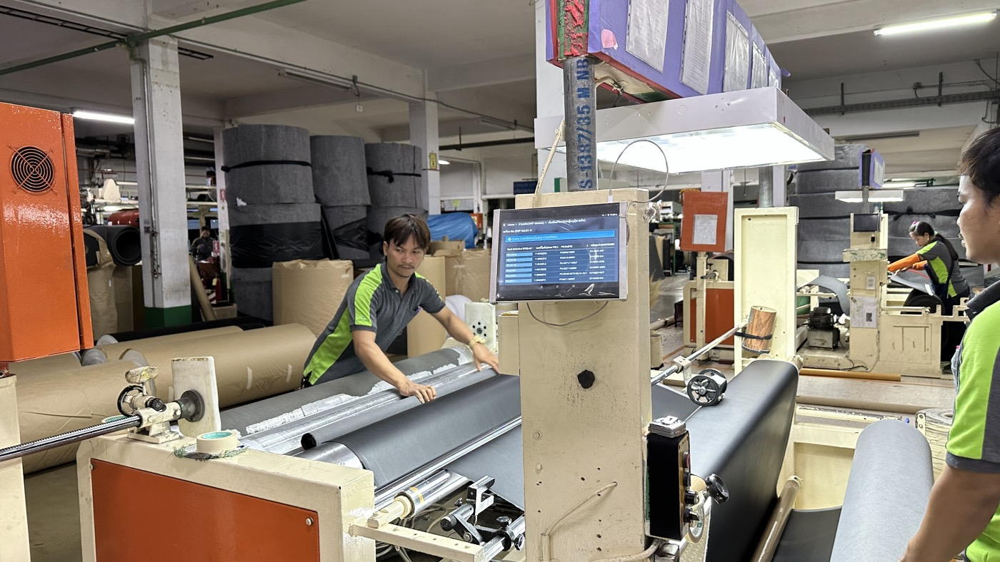
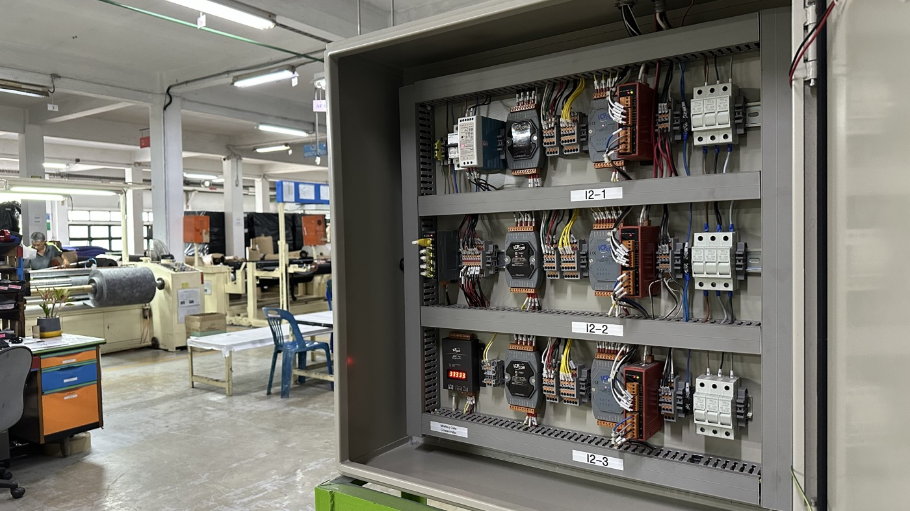
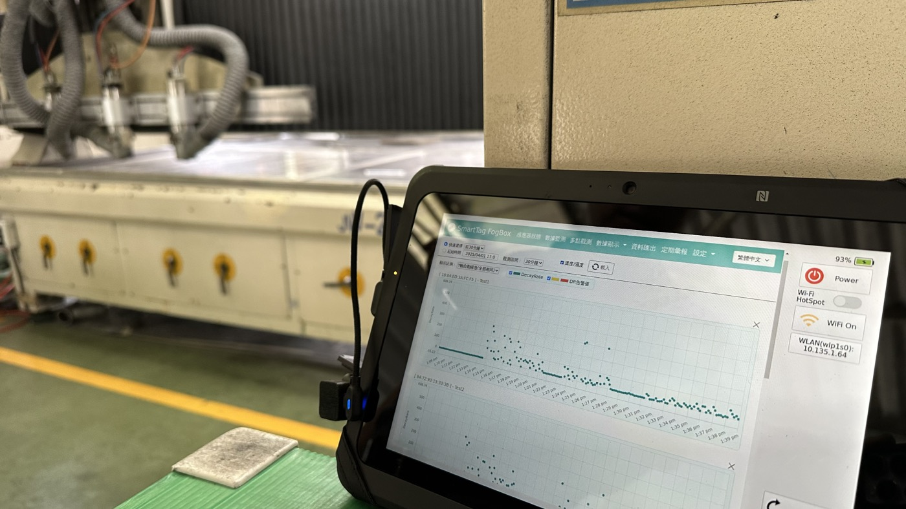
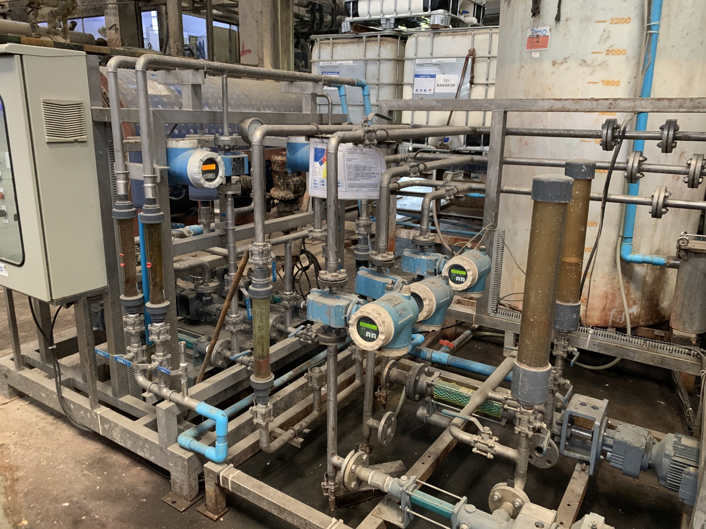

01
工廠績效與 MES
MES、OEE、IoT 現場數據與產線可視化
適合：停機、效率、良率、工單進度說不清楚
了解更多
輸入機台、人力、班制與工作天，快速估算目前有效產出、改善空間與潛在收益，再決定最值得優先改善的現場問題。
N/NPC 的角色不是單賣系統，而是協助你把現場、流程、AI 與管理決策串起來。
從訂單、等待、重工與產線節奏找出利潤消失的位置。
把機台、工單、品質、能耗、人料位置變成可用資料。
再選擇 MES、IoT、AI、RTLS 或流程平台，讓改善能被追蹤。
工廠主常看到訂單很多、現場很忙、報表都有，但真正虧在哪裡，要進到產線數據才會清楚。
小批量、多變更、急單插單，會讓原本好看的訂單變薄。
等待材料、等待人員、等待確認，常常比故障更傷。
報廢、返修與重測，如果沒有被量化，就會藏在日常裡。
N/NPC 會先協助判斷哪些資料值得接：機台狀態、震動與溫度、能耗、公用系統、工單與品質。當訊號被接起來，老闆看到的就不只是 dashboard，而是可以採取行動的營運事實。

我們依現場需求選擇與整合原廠技術，主角是你的營運改善，不是產品型錄。
MES、OEE、IoT 現場數據與產線可視化
PROFET AI、Smart Tag 機台健康、良率與需求預測
CRM、BizForm、KM 與跨部門流程
RTLS、LoRaWAN、BLE/BLT 與即時追蹤



第一版診斷會從 OEE、流程斷點、資料可用性與改善優先順序開始。
確認產線、流程、資料來源與真正決策者在乎的數字。
把等待、重工、效率、位置、流程延遲轉成可討論的金額。
依需求導入 MES、IoT、AI、CRM、RTLS 或混合方案。
用報表、預警與顧問節奏，把改善變成日常管理。
N/NPC 讓實習生與顧問團隊進行 AI-Augmented Engineering 實驗，用 AI 協助需求拆解、介面設計、資料結構、API 串接與 Web App 原型開發。這不是傳統軟體外包，也不是單純寫 prompt，而是訓練新一代工程人才用 AI 更快驗證真實營運問題。
從 OEE 工具開始，或直接預約 N/NPC 進行產線與流程診斷。